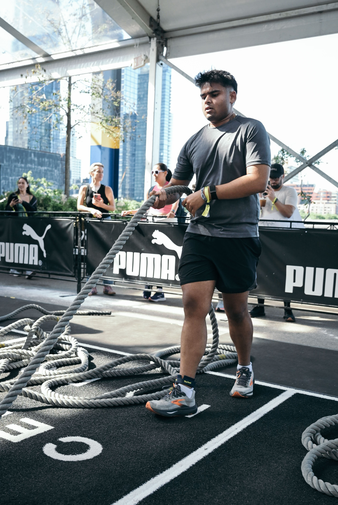
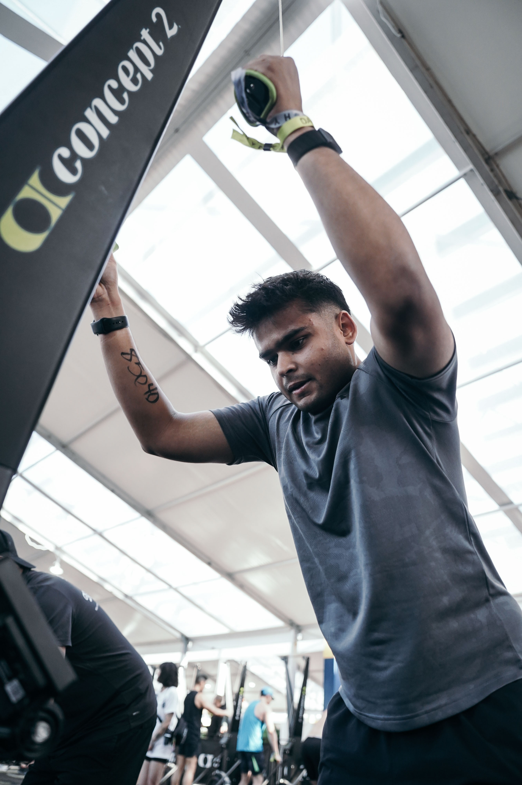

05 / Outside the lab
A life in motion.
HYROX, running, and photography.
Beyond engineering.
HYROX
Race day, in focus.




Select a photo to view it larger.
05 / Outside the lab
HYROX, running, and photography.
Race day, in focus.


Select a photo to view it larger.